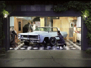
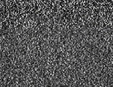
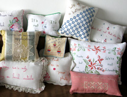
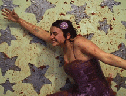
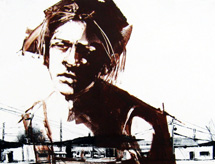
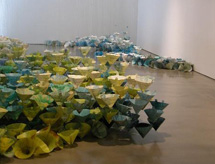
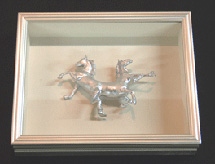
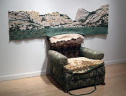
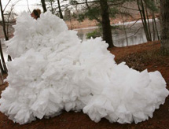
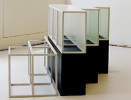

<!DOCTYPE html PUBLIC "-//W3C//DTD XHTML 1.0 Transitional//EN" "http://www.w3.org/TR/xhtml1/DTD/xhtml1-transitional.dtd">
<html xmlns="http://www.w3.org/1999/xhtml">
<head>
<meta http-equiv="Content-Type" content="text/html; charset=iso-8859-1" />
<title>2009 Exhibitions</title>
<style type="text/css">
<!--
.style7 {font-size: 9px}
.style9 {font-size: 9px; font-family: Verdana, Arial, Helvetica, sans-serif; }
-->
</style>
</head>
</html>

<html xmlns="http://www.w3.org/1999/xhtml">
<head>
</head>

<body>
<table width="92%" border="0">
  <tr>
    <td height="876" valign="top"><div align="left">
        <table width="680" border="0" align="center" bgcolor="#FFFFFF">
          <!--DWLayoutTable-->
          <tr valign="bottom"> 
            <td height="70" colspan="14" align="left" valign="top"> 
            <div align="center"><a href="../index.htm"></a></div>            </td>
          </tr>
          <tr bgcolor="#006699"> 
            <td height="2574" colspan="14" align="center" valign="top" bgcolor="#FFFFFF"> 
              <div align="center">              </div>
              <table width="100%" border="0" cellspacing="4" cellpadding="6">
                <tr>
                  <td width="31%"><a href="deSoto_Lewis/Lewis_deSoto.html"></a></td>
                  <td width="69%"><p><font face="Verdana, Arial, Helvetica, sans-serif" size="2" color="#000000">Main and Focus Galleries and Cardinale Project Room <br />
                            <a href="deSoto_Lewis/Lewis_deSoto.html">Lewis deSoto: <i>BEFORE AFTER</i></a><i> <br />
                            </i>Exhibition: January 31 - March 28, 2009<i><br />
                            </i></font><br />
                            <font size="1" face="Verdana, Arial, Helvetica, sans-serif">Lewis deSoto has been  exploring personal narrative through his artwork for over 20 years using an  extraordinary range of media.</font> <font size="1" face="Verdana, Arial, Helvetica, sans-serif">DeSoto&rsquo;s multimedia  installations combine sound, light, video, space, and sculpture elements and  are site-specific or oriented toward making a complete environment. His  conceptual artwork utilizes automobiles, inflatables, electronics, photography,  wood and metal construction.<br />
                            <br />
                              Press articles: <a href="deSoto_Lewis/deSoto_Artweek09.pdf">Artweek</a> </font><font size="1" face="Verdana, Arial, Helvetica, sans-serif"> &bull; <a href="deSoto_Lewis/deSoto_Merc_Pizarro.pdf">San Jose Mercury News</a> &bull; <a href="deSoto_Lewis/deSoto_Metro.pdf">Metro News </a><br />
                                </font><br />
                    <font size="1" face="Verdana, Arial, Helvetica, sans-serif">Image: Lewis deSoto, <em>The Restoration</em>, Lightjet transparency in  light box,  2006, Courtesy of Brian Gross Fine Art, San  Francisco</font></p></td>
                </tr>
                <tr>
                  <td height="18" colspan="2"><hr /></td>
                </tr>
                <tr>                </tr>
                <tr>
                  <td width="31%"><a href="deSoto_Lewis/Lewis_deSoto.html"></a></td>
                  <td width="69%"><p><b><font size="3" face="Verdana, Arial, Helvetica, sans-serif"><i>NIGHT 
                    MOVES<br />
                  </i></font></b><font size="2" face="Verdana, Arial, Helvetica, sans-serif">After-dark                 programming in the ICA's front windows</font><br />
                  <font face="Verdana, Arial, Helvetica, sans-serif"><a href="deSoto_Lewis/Lewis_deSoto.html"><font size="2">Lewis deSoto</font></a><font size="2"><br />
                      <em>OBSERVATORY</em><br />
                      January 31  - March 28, 2009</font></font></p>
                    <p><font face="Verdana, Arial, Helvetica, sans-serif"><em><font size="1">Observatory </font></em><font size="1">combines the static or  &ldquo;snow&rdquo; of analog television with sounds collected from outer space.&nbsp; The interpretation of both television static  and the sound recordings has been a topic of controversy as humans question the  existence of extraterrestrial life.</font></font></p>
                    <p><font size="1" face="Verdana, Arial, Helvetica, sans-serif">Image:  Lewis deSoto, <em>Observatory</em>, video still, 1993. </font></p></td>
                </tr>
                <tr><td height="18" colspan="2"><hr /></td>
                </tr>
              </table>
              <table width="100%" border="0" cellspacing="4" cellpadding="6">
                <tr>
                  <td width="31%"><a href="Beldner_Ray/INMIY.html"></a></td>
                  <td width="69%"><p><font face="Verdana, Arial, Helvetica, sans-serif" size="2" color="#000000">Focus Gallery, </font><font face="Verdana, Arial, Helvetica, sans-serif" size="2" color="#000000"> Project Room <br />
                    <em><strong><a href="Beldner_Ray/INMIY.html">It's Not Us, It's You</a> </strong></em>
        <i> <br />
                      </i>Exhibition: April 4 - June 20, 2009</font></p>
                    <p><font size="1" face="Verdana, Arial, Helvetica, sans-serif">Guest curated by artist  Ray Beldner, <em>It&rsquo;s Not Us, It&rsquo;s You</em> explores the inevitability of rejection in our lives. The work in this  exhibition responds to the tragic and heartbreaking realities of rejection with  subversion, humor and brutal honesty. Artists include Anthony Discenza,  Stephanie Syjuco, Michael Arcega, Arthur Gonzalez, Kara Maria, Steve Lambert,  Jonn Herschend, Dee Hibbert-Jones, Nomi Talisman, Desiree Holman, Orly Cogan,  Kate Gilmore and Robert Eads.<a href="http://www.sjica.org/exhibitions/Beldner_Ray/INMIY.html"> Read more &gt;</a></font><font size="1" face="Verdana, Arial, Helvetica, sans-serif"><br />
                      Press articles: <a href="deSoto_Lewis/deSoto_Artweek09.pdf"></a>  &bull; <a href="deSoto_Lewis/deSoto_Merc_Pizarro.pdf"></a> &bull; <a href="deSoto_Lewis/deSoto_Metro.pdf"></a></font></p>
                    <p><font size="1" face="Verdana, Arial, Helvetica, sans-serif">Image: Orly Cogan<em>, Fluffy &quot;F&quot; Offs, 2009, </em>Courtesy of the Artist</font></p></td>
                </tr>
                <tr>
                  <td height="18" colspan="2"><hr /></td>
                </tr>
                <tr>
                  
                </tr>
                <tr>
                  <td width="31%"><a href="Beldner_Ray/INMIY.html"></a></td>
                  <td width="69%"><p><b><font size="3" face="Verdana, Arial, Helvetica, sans-serif"><i>NIGHT 
                    MOVES<br />
                  </i></font></b><font size="2" face="Verdana, Arial, Helvetica, sans-serif">After-dark                 programming in the ICA's front windows</font><br />
                  <font face="Verdana, Arial, Helvetica, sans-serif"><a href="Beldner_Ray/INMIY.html"><font size="2">Kate Gilmore </font></a><font size="2"><br />
                  <em>With Open Arms </em><br />
April 4 - June 26, 2009</font></font></p>
                      <p><font size="1" face="Verdana, Arial, Helvetica, sans-serif">Kate Gilmore&rsquo;s video artworks address specific struggles and dramas of everyday life, creating
                      narratives that explore the symbols, behaviors and sentiments associated with stereotypical
                      expectations of women.  In this six-minute video,
                      the artist dressed in a sleeveless, lavender cocktail dress, arms flung wide-open, proudly gestures
                      to her audience as if saying &ldquo;ta-da!&rdquo; Though it appears to be the finale of a theatrical
                      performance, the actress is pelted with tomatoes while she tries to maintain her pose and smile.</font></p>
                    <p><font size="1" face="Verdana, Arial, Helvetica, sans-serif">Image:  Kate Gilmore, <em>With Open Arms</em>, 2005,  Single-channel video, Courtesy of the Artist, Catharine Clark Gallery, SF and Smith-Stewart, NY</font></p></td>
                </tr>
                <tr><td width="31%"><a href="LiftOff09/Lift_Off09.html"></a></td>
                  <td width="69%"><p><font face="Verdana, Arial, Helvetica, sans-serif" size="2" color="#000000">Main Gallery <br />
                    <em><strong><a href="LiftOff09/Lift_Off09.html">LIFT OFF</a> </strong></em>
        <i> <br />
                      </i>Exhibition: April 10 - June13, 2009</font></p>
                    <p><font size="1" face="Verdana, Arial, Helvetica, sans-serif">Fifth   annual exhibition featuring the collective work of San Jose State   University&rsquo;s  (SJSU) Master  of Fine Art (MFA) 2009 graduates</font><font size="1" face="Verdana, Arial, Helvetica, sans-serif">.<br />
                        <a href="LiftOff09/Lift_Off09.html">Read more &gt;</a><br />
  Press articles: &bull; &bull; </font></p>
                    <p><font size="1" face="Verdana, Arial, Helvetica, sans-serif">Image:  Dina Ropele<em>, 2009, </em>Courtesy of the Artist</font></p></td><td height="18" colspan="2"><hr /></td>
                </tr>
              </table>
              <table width="100%" border="0" cellspacing="4" cellpadding="6">
                <tr><td width="31%"><a href="MM09/MM_09.html"></a></td>
                  <td width="69%"><p><font face="Verdana, Arial, Helvetica, sans-serif" size="2" color="#000000">Focus Gallery, </font><font face="Verdana, Arial, Helvetica, sans-serif" size="2" color="#000000"> Cardinale Project Room <br />
                    <em><strong><a href="MM09/MM_09.html">Monotype Marathon</a> </strong></em>
        <i> <br />
                      </i>Exhibition: </font><font size="2" face="Verdana, Arial, Helvetica, sans-serif">July 1  &ndash; July 18, 2009</font></p>
                    <p><font size="1" face="Verdana, Arial, Helvetica, sans-serif">Our annual    print exhibition and fundraising auction that features the work of the best   printmakers in the Bay Area.<br />
                      <a href="MM09/MM_09.html"> Read more &gt;</a><br />
                      Press articles:   &bull;  &bull; </font></p>
                    <p><font size="1" face="Verdana, Arial, Helvetica, sans-serif">Image:  Lynn Brofsky, detail of<em> Heart of Town</em>, 2009, monotype, Courtesy of the Artist</font><br />
</p></td>
                </tr>
                <tr><td width="31%"><a href="NextNew_Green/Green.html"></a></td>
                  <td width="69%"><p><font face="Verdana, Arial, Helvetica, sans-serif" size="2" color="#000000">Focus Gallery, </font><font face="Verdana, Arial, Helvetica, sans-serif" size="2" color="#000000"> Project Room <br />
                    <em><strong><a href="NextNew_Green/Green.html">Next New: Green</a> </strong></em>
        <i> <br />
                      </i>Exhibition: July 7 - September 20, 2009<em><br />
                      <br />
                      </em></font><font size="1" face="Verdana, Arial, Helvetica, sans-serif"><em>NextNew</em>  features work from emerging talent on the region&rsquo;s    contemporary art scene. This year&rsquo;s show  subtitled <em>Green,</em> surveys fresh  perspectives on climate change and related environmental   and conservation  issues.<br />
                      <a href="NextNew_Green/Green.html"> Read more &gt;</a><br />
                      Press articles:   &bull;  &bull; </font></p>
                    <p><font size="1" face="Verdana, Arial, Helvetica, sans-serif">Image:  Michelle Blade, <em>Untitled (We Found</em> <em>God on a Cruise Ship</em>), 2007, Ink and  acrylic on dura-lar, Courtesy of the Artist</font></p></td>
                  <td height="18" colspan="2"><hr /></td>
                </tr>
                <tr><td width="31%"><a href="Dillbohner_Christel/Christel_Dillbohner.html"></a></td>
                  <td width="69%"><p><font face="Verdana, Arial, Helvetica, sans-serif" size="2" color="#000000">Focus Gallery, </font><font face="Verdana, Arial, Helvetica, sans-serif" size="2" color="#000000"> Cardinale Project Room <br />
                    <em><strong><a href="Dillbohner_Christel/Christel_Dillbohner.html">Christel Dillbohner: Ice Floe</a> </strong></em>
        <i> <br />
                      </i>Exhibition: </font><font size="2" face="Verdana, Arial, Helvetica, sans-serif">August 8  - September 20, 2009</font></p>
                    <p><font size="1" face="Verdana, Arial, Helvetica, sans-serif">A solo exhibition featuring a large-scale installation, and multi-media  prints and paintings by artist Christel Dillbohner. Referencing the melting glaciers of the Arctic and Antarctic regions, Dillbohner&rsquo;s <em>Ice Floe</em> presents a visual exploration  of humanity&rsquo;s impact on the natural environment.<br />
                      <a href="Dillbohner_Christel/Christel_Dillbohner.html"> Read more &gt;</a><br />
                      Press articles:   &bull;  &bull; </font></p>
                    <p><font size="1" face="Verdana, Arial, Helvetica, sans-serif">Image:  Christel Dillbohner, <em>Ice Floe</em>, 2009, site specific  installation, paper cones, pigmented wax, monofilament, Courtesy of the Artist</font></p></td>
                </tr><tr><td width="31%"><a href="FallAuction2009/fallauction09.html"></a></td>
                  <td width="69%"><p><font face="Verdana, Arial, Helvetica, sans-serif" size="2" color="#000000">Focus Gallery, </font><font face="Verdana, Arial, Helvetica, sans-serif" size="2" color="#000000"> Project Room <br />
                    <em><strong><a href="FallAuction2009/fallauction09.html">29th Annual Fall Art Auction</a> </strong></em>
        <i> <br />
                      </i>Exhibition: </font><font size="2" face="Verdana, Arial, Helvetica, sans-serif">October 2 - October 24, 2009</font></p>
                    <p><font size="1" face="Verdana, Arial, Helvetica, sans-serif">The Annual Fall Art Exhibition and Auction of more than 100 art works by some of the hottest artists in the Bay Area.</font><font size="2" face="Verdana, Arial, Helvetica, sans-serif"><br />
                    </font><font size="1" face="Verdana, Arial, Helvetica, sans-serif"><a href="file:///S|/ftp_Virigina/public_html/fallauction09.html"> Read more &gt;</a></font><font size="1" face="Verdana, Arial, Helvetica, sans-serif"><br />
                      Press articles: <a href="deSoto_Lewis/deSoto_Artweek09.pdf"></a>  &bull; <a href="deSoto_Lewis/deSoto_Merc_Pizarro.pdf"></a> &bull; <a href="deSoto_Lewis/deSoto_Metro.pdf"></a></font></p>
                    <p><font size="1" face="Verdana, Arial, Helvetica, sans-serif">Image:  Misako Inaoka, <em>Race Horses</em>, 2009, mixed media, Courtesy of the Artist</font> <font size="1" face="Verdana, Arial, Helvetica, sans-serif">and David Sallow Gallery, Los Angeles</font></p></td>
					
                  
                </tr>
                <tr><td width="31%"><a href="Afterlife/afterlife.html"></a></td>
                  <td width="69%"><p><font face="Verdana, Arial, Helvetica, sans-serif" size="2" color="#000000">Main Gallery,  Cardinale Project Room <br />
                    <em><strong><a href="Afterlife/afterlife.html">Afterlife</a> </strong></em>
        <i> <br />
                      </i>Exhibition: </font><font size="2" face="Verdana, Arial, Helvetica, sans-serif">November 7, 2009 - January 23, 2010</font></p>
                    <p><font size="1" face="Verdana, Arial, Helvetica, sans-serif">Guest curated by Kathryn Funk, <em>Afterlife</em></font> <font size="1" face="Verdana, Arial, Helvetica, sans-serif">is</font> <font size="1" face="Verdana, Arial, Helvetica, sans-serif">a group exhibition of works created to breathe new life into re-purposed materials and objects.<br />
                      <a href="Afterlife/afterlife.html"> Read more &gt;</a><br />
  Press articles:   &bull; &bull; </font></p>
                    <p><font size="1" face="Verdana, Arial, Helvetica, sans-serif">Image:  Scott Oliver, <em>The Valley</em>, 2006, found chair, hardboard, 60 1/2 x 91 3/4 x 38 1/2 inches, Courtesy of the Artist</font><font size="1" face="Verdana, Arial, Helvetica, sans-serif"> </font></p></td>
                </tr><tr><td width="31%"><a href="TheodoraVarnayJones/theodoravarnayjones.html"></a></td>
                  <td width="69%"><p><b><font size="3" face="Verdana, Arial, Helvetica, sans-serif"><i>NIGHT 
                    MOVES<br />
                  </i></font></b><font size="2" face="Verdana, Arial, Helvetica, sans-serif">After-dark                 programming in the ICA's front windows</font><br />
                  <font size="2" face="Verdana, Arial, Helvetica, sans-serif">Claudia Borgna</font><font face="Verdana, Arial, Helvetica, sans-serif"> <font size="2"><br />
                  <em><a href="TheodoraVarnayJones/theodoravarnayjones.html">Fish Out of Water</a> </em><br />
                  </font><font size="2" face="Verdana, Arial, Helvetica, sans-serif">November 7, 2009 -  January 23, 2010</font></font></p>
                    <p><font size="1" face="Verdana, Arial, Helvetica, sans-serif">Claudia's work entails the   investigation of what she calls the &ldquo;evolution of landscape&rdquo;, a process   started and effected by modern life-styles and consumerism. Her   installations are the materialization of an ongoing observation and   questioning of how the &ldquo;plastic&rdquo; and the natural realms interact with   one another and thereby come to create new ephemeral orders.<br />
                          <a href="TheodoraVarnayJones/theodoravarnayjones.html"> Read more &gt;</a></font><font size="1" face="Verdana, Arial, Helvetica, sans-serif"><br />
                            Press articles: <a href="deSoto_Lewis/deSoto_Artweek09.pdf"></a> &bull; <a href="deSoto_Lewis/deSoto_Merc_Pizarro.pdf"></a> &bull; <a href="deSoto_Lewis/deSoto_Metro.pdf"></a></font></p>
                    <p><font size="1" face="Verdana, Arial, Helvetica, sans-serif">Image: Claudia Borgna<em>, 2009, </em>Courtesy of the Artist</font></p></td>
					
                  
                </tr><tr><td width="31%" height="225"><a href="TheodoraVarnayJones/theodoravarnayjones.html"></a></td>
                  <td width="69%"><p><font face="Verdana, Arial, Helvetica, sans-serif" size="2" color="#000000">Focus Gallery </font><font face="Verdana, Arial, Helvetica, sans-serif" size="2" color="#000000"><br />
                        <em><strong><a href="TheodoraVarnayJones/theodoravarnayjones.html">Theodora Varnay Jones: Manifold</a> </strong></em> <i> <br />
                        </i>Exhibition: </font><font size="2" face="Verdana, Arial, Helvetica, sans-serif">November 7 - February 10, 2010</font></p>
                    <p><font size="1" face="Verdana, Arial, Helvetica, sans-serif">Comprised  of two-and three-dimensional works including drawings, constructed works and  re-conceptualized ready-made pieces, <em>Manifold</em> reflects the artist&rsquo;s  systematic exploration of repetition, form and material.</font><font size="2" face="Verdana, Arial, Helvetica, sans-serif"><br />
                      </font><font size="1" face="Verdana, Arial, Helvetica, sans-serif"><a href="TheodoraVarnayJones/theodoravarnayjones.html"> Read more &gt;</a></font><font size="1" face="Verdana, Arial, Helvetica, sans-serif"><br />
                        Press articles: <a href="deSoto_Lewis/deSoto_Artweek09.pdf"></a> &bull; <a href="deSoto_Lewis/deSoto_Merc_Pizarro.pdf"></a> &bull; <a href="deSoto_Lewis/deSoto_Metro.pdf"></a></font></p>
                    <p><font size="1" face="Verdana, Arial, Helvetica, sans-serif">Image:  Theodora Varnay Jones,<em> Step a Side-B</em>, 2007, synthetic materials, pigments, rubber, wood structure, Courtesy of the Artist and Don Soker Contemporary Art, SF</font></p>
                    <p>&nbsp;</p></td>
					
                  
                </tr><tr><td width="31%"><a href="TheodoraVarnayJones/theodoravarnayjones.html"></a></td>
                  <td width="69%">&nbsp;</td>
                </tr>
                <tr>                </tr>
              </table>
              <hr>            </td>
          </tr>
          <tr> 
            
            <td width="143"></td>
            
            
            
            
            
            
          </tr>
          <tr> 
            <td height="48" colspan="14" valign="top"> 
              <div align="center"><font face="Verdana, Arial, Helvetica, sans-serif" size="1" color="#999999"><b><font color="#333333">San 
                Jose Institute of Contemporary Art</font></b><font color="#333333"><br />
                560 South First Street San Jose, CA 95113 tel (408) 283-8155 fax 
                (408) 283-8157</font></font><font color="#333333"><br />
                 
                <a href="../about.htm"><font size="1" face="Verdana, Arial, Helvetica, sans-serif">Gallery 
                hours</font></a>  
                <font size="1" face="Verdana, Arial, Helvetica, sans-serif"><a href="../news/ArtistInformation.htm">Artist 
                Information</a></font></font> </div>            </td>
          </tr>
        </table>
    </div></td>
  </tr>
</table>
<map name="Map" id="Map">
  <area shape="rect" coords="12,5,61,22" href="../index.htm" />
  <area shape="rect" coords="66,4,110,21" href="../about.htm" />
  <area shape="rect" coords="117,5,188,22" href="exhsch.htm" />
  <area shape="rect" coords="196,5,274,21" href="../printcenter/printcenter.htm" />
  <area shape="rect" coords="280,4,364,22" href="../readingroom/reading_room.htm" />
  <area shape="rect" coords="371,4,456,20" href="../membership2.htm" />
  <area shape="rect" coords="462,4,546,20" href="../jobs.htm" />
  <area shape="rect" coords="556,3,645,21" href="../facilityrental2.htm" />
</map>
</body>
</html>

